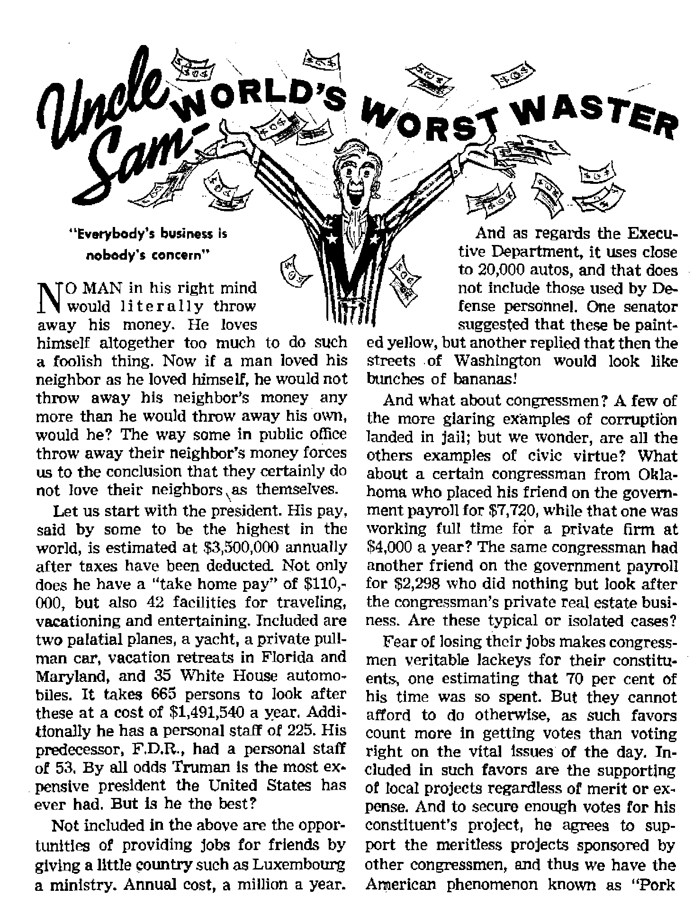

POLISH COMMUNISTS PROSECUTE CHRISTIANS
Inside a Red ’’kangaroo court” ■ ■ ■ -**-■ ■ ..... The Science of What We Are Heredity at firms creation hy kinds
Uncle Sam—World’s Worst Waster
*'Everybody's business is nobodv’s concern”
"With This Ring, I Thee Wed”
THE MISSION OF THIS JOURNAL
News sources that are able to keep you awake to the vital Issues of our times must be unfettered by censorship and selfish Interests. “Awake 1” has no fetters. It recognizes facts, faces facts, is free to publish facts. It is not bound by political ambitions or obligations; it is unhampered by advertisers whose toes must not be trodden on; it is unprejudiced by traditional creeds. This Journal keeps itself free that it may speak freely to you. But It does not abuse its freedom. It maintains integrity to truth.
“Awake I1’ uses the regular news channels, but is not dependent on them. Its own correspondents are on all continents) in scores of nations. From the four comers of the earth their uncensored, on *the-scenes reports come to you through these columns* This Journal's viewpoint is not narrow, but is international. It is read in many nations, in many languages, by persons of all agesr Through its pages many fields of knowledge pass in review—government, commerce, religion, history, geography, science, social conditions, natural wonders—why, its cover* age is as broad as the earth and as high as the heavens.
"Awake 1” pledges itself to righteous principles, to exposing hidden foes and subtle dangers, to championing freedom for all, to comforting mourners and strengthening those disheartened by the failures cf a delinquent world, reflecting sure hope for the establishment of a right-co us New 'World.
Get acquainted with “AwakeI” Keep awake by reading “Awake?*
Published Semimonthly By WATCHTOWER BIBLE AND TRACT SOCIETY* INC.
lit Adams Street Brooklyn 1* N. U. S> A.
N, H. Kwc'BE, prettiest Grant Suitsu. Secretary
Printing this ietue: 870,000 Five cents a copy
LaMHtit Is wHeh thh eagulai h pillftfed: SaniwxtblY—Atrikusos, Engllab. Finnish, Gfiinan, Norwajian, Spinlsh. Monthly—Dinlsb. French. Greek, Portuguese, Swedish, Ukrxlniia.
Offices Yearly wWriptlw Rate
AhvIcb, U.S.,117 Adams St, Brooklyn 1 N.Y. fl Antralli, 11 Beresford Bd., Sinthfleld. N.fi.W. Sa CaMdlL 40 Irwin Ara., Toronto 5, Ontario *1 Eillud, 84 Crma Teruce, Londoc, ff. 2 7t Stath Anltt, 623 Boston Hwte, C*f* Town 7x
Kulm u Mand-clow matin at Brooklyn, N. I.
RMilttanes should be sent to oflica to your country in compliance with reaulatloni to guarantee nto delletry of money Remlttancei ere accepted nt Brooklyn front countries where no office located, bp international money order only. Subscription rates la different coutttrias are here ataied jn local currency, Natlte of expiration (with renewal blank) Js sent at least two issues before lubKrlptioit expires. Chama of addrm when tent tn our ttfte may be expected effective within one manti]. Seal your old u well M ntw address.
Art of March 3, 1879. Printed In U, S. A.
|
Morals Rise to the Surface |
3 |
“For Better or for Worse” |
13 |
|
Polish Communists Prosecute Christians |
4 |
Hypocrisy Mars Religious Indignation |
15 |
|
Position of J.W.’s Made Clear |
5 |
Uncle Sam—World’s Worst Waster |
17 |
|
False Witnesses Brought Forth |
6 |
'With This Ring, I Thee Wed” |
21 |
|
Found Guilty According to Plan |
6 |
Objections Against Wedding Rings |
22 |
|
Much Good Resulted from Trial |
8 |
Significance of Modem Wedding Ring |
23 |
|
The Science of What We Are |
9 |
“Your Word Is Truth” | |
|
This Varied yet Stable Life |
10 |
The Cross—Pagan Symbol or Christian? |
25 |
|
“After Its Kind" |
11 |
Gilead Graduates Seventeenth Class |
27 |
|
Vaudeville of the Deep |
12 |
Watching the World |
29 |
Volume XXXII Brooklyn, N. Y„ October 8, 1967 Number 19
IN EARLY July the Roman Catholic Church announced a moral crackdown in Spain. The campaign, which includes public life, publications and motion pictures, prompted civil authorities to dust off some old ideas about swimming suits. It was decreed that men must cover their chests and wear trunks reaching nearly to their knees. Women must see that their backs are covered and wear skirts.
Discussing “the growing tide of immorality” in dress, the bishop of Majorca said eloquently in a pastoral letter: “Do they stop to think that those who seek the coolness of the beach and the agreeable freshness of the sea while neglecting moral laws are exposing themselves to eternal fire? Have they no fear? The fear of God is indeed the fount of wisdom,” The bishop threatens bathing suit violators with “eternal fire”. Would he remain as unflinching with weightier sinners?
There is good reason for asking. In the summer of 1948, similar legislation was enacted in Italy by the clerical Christian Democrats, then fresh from their spring victory over the communists. But the government’s sudden wrath of righteousness was met with a tide of indignation, suspicion and contempt. If the “hell fire” fable was utilized then, it had little effect. A pile of revenue mounted from fines to Italian girls with two-piece bathing suits, though some of the more attractive ladies were offered the alternative of a date with the officer who found them. Furthermore, any found speaking a foreign tongue, or even Italian with a bad accent, were left strictly alone. The line had to be drawn somewhere, and the morals business cannot compete with the tourist trade for income.
Aside from this, even greater Italian resentment may have stemmed from the common knowledge that the country’s morals continued to suffer in more serious ways. Two years following the 1948 beach episodes, the Ulster Protestant called Naples a “city of prostitutes and ‘saints* **. While popular worship of “Saint** Januari-us continued to reach new highs, the city remained a stench morally. Said the Sydney Morning Herald: “In the narrow streets the traveller has to be constantly on his guard against assault, robbery and a drenching by water thrown out of careless windows.** The same paper lamented the city*s “armies of small boys** acting as agents for prostitutes.
So the question is a timely one: is Rome now sincerely seeking to still her critics? Morals in Catholic lands world-wide, in politics, family life or sex in general have been variously condemned by a legion of writers. Unfortunately, present efforts at correction seem like a tiny wall of straw against the roaring tide. Too often a moral veneer rises to the surface while the skim milk of scandal settles beneath.
If you lave liberty a.nd truth and justice this report will rouse your righteous indignation. It is an eyewitness'^account of how false charges, ft Ise witnesses, and a false pretense of Justice worked together for the conviction Of seven perfectly Innocent men. It reveals the utter disregard godless officials have for simple decency and fairness. It shows what a vicious hatred these gangsters have for God and his kingdom. This report will also make you rejoice to know that in Poland today there are many good people with that same faith, determination and integrity had by Christ and the apostles.
ON APRIL 22, 1950, the secret police of Poland’s communist government swooped down on the headquarters of Jehovah’s witnesses in Warsaw and arrested six of the members. Two months later the entire organization was officially banned and many thousands of these devoted Christians were arrested and imprisoned without a trial* After being tortured and mistreated for nearly a year, seven of those considered the principal leaders were placed in the dock, and another infamous Communist trial got underway.
To read the long list of charges laid against these persons one might be inclined to conclude that surely here were some of Poland’s worst criminals. Among other things, they were said to be guilty of (1) engaging in activity of diversion against the government, nonsupport of the developments of the state, refusal to pay taxes, propagandizing for a third world war, boycotting the Stockholm Peace Appeal, activity hostile to the U.S.S.R., etc.; (2) engaging in illegal underground activity; (3) engaging in espionage in political, economic and military matters on behalf of American imperialists, etc.; (4) collaborating with the Hitler Fascists; (5) illegal crossing of national boundaries, and (6) dealing in illegal currency manipulations. These were the things the state hoped to “prove” in the trial.
As demonstrated so many times the primary purpose of these Communist trials is to cause the defendants to make an open self-confession of guilt and plead for mercy. This accomplished, sentence is passed and the trial is over. Imagine the court’s indignation and consternation on this occasion when all seven of Jehovah’s witnesses pleaded “not guilty”!
Each defendant was now to be dealt with individually, hence they were all removed from the courtroom except one by the name of Scheider, who, for a number of years, was in charge of the Polish branch office of the Watch Tower Society. For more than four hours the state attorney and the judges fired a barrage of tricky questions at him, aimed at tripping him up in some twisted statement. From the publications of Jehovah’s witnesses they deceitfully took phrases or sentences completely out of their setting and the context, and then accused the publications of advocating something altogether contrary to what was intended. They demanded the defendant to answer their questions with “yes” or “no”, and time and time again Scheider was interrupted when his answers were contrary to what the court desired.
Among the points made by Scheider under this grueling examination were the following. Jehovah’s witnesses are neutral toward the political government of Russia as well as toward the governments of all other nations. In hoping and praying for God’s kingdom rule of righteousness they do not take sides in the political affairs of any nation. The Lord’s people are not against civil developments and improvement programs; it is nice when people try to give an orderly and beautiful aspect to this earth. Taxes have been and will continue to be paid by them, for it is a commandment of the Bible that Christians give Caesar what is Caesar’s. At the same time they are accused of being against the Communists in Poland, elsewhere Jehovah’s witnesses are charged with being. Communists.. In this way the Scriptures are fulfilled which declare that true Christians would be hated and persecuted by all nations. Instead of advocating a third world war, these faithful Christians are very diligent in warning the people that the Battle of God'Almighty, called Armageddon in the Bible, will soon occur. It is not true that Jehovah’s witnesses are against education, for they send their own children to school. As to participation in military service, such is a personal matter for each individual to decide for himself.
Touching on other matters, Scheider freely admitted that he had crossed into Czechoslovakia on a visit, but only after he had obtained a permit to do so at the border, which he understood met the government requirements. How was he to know that the permit had not been properly tied up with all the required technicalities of totalitarian red tape? To the charge that he had engaged in illegal money transactions, Scheider did not hesitate to tell what steps he had taken to protect the contributions sent in to the office for the advancement oPthe preaching of the Kingdom gospel and for the purchase of Bibles from the British and Foreign Bible Society in Warsaw. Through a local bank he had the contributions transferred into legal tender not subject to devaluation, and, since this was not a commercial transaction and no profit was realized in the exchange, he failed to see where it violated the currency regulations.
Here is an illustration of the diabolical tactics used by these totalitarian forces. When the secret police swarmed down on the various assembly halls of Jehovah’s witnesses in Poland, they seized, among other things, individual territory maps used by the witnesses in their orderly preaching of the gospel from house to house. Now these maps were ordinary city maps which anyone can purchase in the local stationery stores. But at the trial these maps were introduced as “positive evidence” that Jehovah’s witnesses were “American spies” engaged in a sinister work- of sabotage, that is, of preparing maps and information for the American government that was vital to the defense of Poland. Of course nothing could be more farfetched. But it is a sample of the Communist concept of justice, truth and righteousness.
The other defendants, each in turn, were brought back to the courtroom and were likewise cross-examined for the explicit purpose of having them testify against themselves, but because they were innocent of the charges made, they only had to speak the truth. When one of them was asked why he did not sign the Com-munist-spbnsored Peace' Appeal he declared that instead of placing his hopes on a peace plan engineered by men he was looking forward with eagerness to the peace that Jehovah God will establish for this troubled old world. Another defendant was questioned as to why he did not participate in the political elections. He explained that he could not vote for two things, that he had already cast his vote for God’s theocratic government under the rule of Christ, and, besides that, he could not favor creatures by voting for them instead of for Christ,
Another defendant, unable to answer many questions about things he was whole-ly unaquainted with, was removed from the courtroom for “special treatment”.
Failing to obtain a confession of guilt from any of the defendants themselves the next Communist step was to bring out so-called “witnesses” who were coached ahead of time to repeat the preposterous charges. Some of these unscrupulous characters were avowed Communists who had crept into the Lord’s organization, made a great display of zeal, and had even been appointed to high positions of service. They were therefore in position to know that the charges made in the indictment were abominable lies, but, instead of testifying to the facts, they parroted the false accusations.
One such rogue by the name of Pastu-szak Michal wormed his way in, became a full-time pioneer publisher, and made such a pretense of serving the Lord he was appointed to be a circuit servant to look after and feed the Lord’s people as a shepherd feeds sheep. Now in court this wolf in sheep’s clothing showed his true identity as he told one impossible lie after another. He said he had been instructed by the branch office to gather espionage reports and turn them in, that the Watchtower organization taught that knowledge would be increased at the world’s end, and hence to prove that we have reached that time it is necessary to obtain much secret knowledge and information. If arrested, he said, he was told that he was not bound to tell the truth.
This mischief-maker Michal insisted that he received these instructions in the presence of 14 other circuit servants, but when the defense requested that the other 14 be called to testify, what do you think the court said? ‘Since the circuit servants have been told to lie [as this falsifier had said], their testimony would be of no value, therefore the court would accept only Michal’s statement.* It is hard to believe that such wicked chicanery would display itself in the name of justice.
Again, when the defense asked permission to bring other witnesses to refute the monstrous lies, the court would not consent. Instead, more false witnesses were paraded out by the prosecution. Some of these wore the same garments of identification as those worn by Judas Iscariot, the betrayer of Jesus. Even when their perjured testimony was exposed the court accepted it as the truth. Time and time again when defense attorneys attempted to draw out answers that would vindicate the defendants and their activity, they were cut short and not permitted to ask such questions, on the ground that the defendant was not accused of the things their lawyers were asking about. Request was made by the defendants that a number of letters be read from witnesses unable to be present, but the court refused this, saying that it already knew what such letters contained.
The charges made, the witnesses heard, all evidence to the contrary successfully kept out, the next order of business before the kangaroo court was a summary of the case by the state attorney. This merely consisted of reiterating one by one the false charges, while at the same time the defendants were attacked as the most dangerous criminals, the very tools of American imperialists, knavish scoundrels bent on overthrowing the sacred Communist government of Poland. Singling Scheider out, the prosecutor charged him with responsibility for the death of 560 Soviet soldiers, 10 Soviet partisans, and a woman major of the Red army, while he was himself a prisoner in a Nazi concentration camp during World War II. In fact, if one were to believe this account, Hitler’s own SS men were even subordinate to Scheider. So, in conclusion, the state attorney demanded the death penalty for Scheider, and for the others, sentences ranging from 8 to 15 years in prison.
Opportunity was now afforded the four defense lawyers to present their arguments in behalf of those already judged “guilty”. Because these lawyers were officially assigned to the case by the court just before trial began, they were unable to familiarize themselves with the facts of th£ case set forth in 14 thick volumes. As a consequence, their refutation was weak and ineffective, and that was the way it was supposed to be, according to Communist court procedure.
It was now time for the pronouncement of sentence, but before the judges would do this their great sense of justice, love and mercy demanded that they allow the defendants to freely speak their mind. What a striking similarity between this instance and the display of a cat’s love and mercy toward a mouse caught in its clutches just before it is gulped down!
But Scheider took advantage of the opportunity to speak and bear witness to the truth. He observed that the truth had not been found with those who keep court; that the truth had been trodden underfoot by responsible men, had been turned upside down, had been suppressed and even killed by his accusers; that all those who are liars, falsifiers, and hypocrites would surely be welcome friends with his accusers. On the other hand, he declared that what had occurred on this occasion proved that people of God who speak the truth are spitefully hated, reproached and persecuted. He said that he was fully conscious that very heavy accusations were laid against him, and the most severe sentence was demanded; nevertheless, he was not guilty of any such crimes. If, therefore, he was to suffer death he would surely remain in the memory of Jehovah God, who has promised all such a resurrection. Consequently, he declared that he was putting full trust and confidence in the precious promises of Jehovah, and was not begging the court for any special favors. The other defendants each in turn followed Scheider, and once more they briefly declared their innocence, yet asked for nothing.
Throughout the three-day trial the defendants were foully mistreated in many ways. To make their defense more difficult they were refused paper and pencil. They were not allowed to see members of their families. They were forced to go all day without anything to eat, being forbidden to receive food from anyone. Fiendish murderers are not treated that way even by the Communists. Time and time again, whenever the defendants touched on Biblical themes or points of faith and belief (important matters directly connected with their activity and the charges made against them), the court interrupted, shouting they would not be converted, they would not be preached to, they would not allow any spouting off, etc. But in spite of such hateful abuse the conduct of all seven was a magnificent testimony in itself.
On March 22, 1951, judgment was announced. Scheider was condemned to life imprisonment, and the rest received prison sentences ranging from 5 to 15 years. With the exception of one, all seven suffered loss of their property to the state and loss of all civil rights for 5 years.
The press and radio paid very little attention to the trial, and what they did present was only a repetition of the defamatory charges made previously by the state. But in spite of this, there was a great deal of interest manifest by the people in general. This is attributed to several reasons: (1) During the past year the authorities have made a great noise over their outlawing this "subversive” group called Jehovah’s witnesses; (2) this group continued to display a fearless attitude even though it found itself pitted against the fierce power of the modern totalitarian machine; (3) the stepped-up and intensive missionary activity of Jehovah’s witnesses has done much to inform the people as to who they are and what they believe and teach; (4) many faithful Catholics are becoming more and more dissatisfied with the vague and compromising position taken by their own ecclesiastical Hierarchy toward the ever-widening claims and demands of the total state, but in Jehovah’s witnesses they see a most uncompromising attitude expressed toward the atheists and godless elements of this old world.
The press reports on Other trials of a similar nature always carry an account of self-accusation and confession of guilt by the condemned, whereas, in this case the press failed to publish any statements made by the defendants. This fact alone aroused many thinking persons to wonder if the charges made by the government were true. One man told how his suspicions were aroused to the point where he went to the court to see and hear for himself. However, he was so angered and disappointed at not obtaining entrance (only a hand-picked few of the public were admitted to this "public” trial) he made it his business to get in touch with some of Jehovah’s witnesses and learn the truth about' this matter firsthand.
One of the fortunate few who were privileged to hear part of the trial disclosed to one of Jehovah’s witnesses what impression it had made on him. "All of the accused in the dock,” he said, "made an extraordinarily dignified and favorable impression. It was a great satisfaction to me to see how courageously and firmly they defended their convictions and faith in harmony with what they had previously preached.” Throughout the villages too the people were not timid in expressing their sympathy for Jehovah’s witnesses.
Next door to one of Jehovah’s witnesses lived a lady who until now refused to listen to the Kingdom message. One morning during the trial she came over to the witness’ home, paper in hand, and exclaimed: "I absolutely do not believe this; these people are innocent of that which they are charged. They are good people who suffer for their faith in the true God, and they surely have an unshakable faith!” This woman was now eager to learn about Jehovah’s blessed kingdom.
There is truly a remarkable parallel between the experiences of these modern Christians and those that befell Christians nineteen centuries ago. Christ himself, a man "holy, harmless, undefiled, separate from sinners”, was given a mock trial and put to death on false charges, with false witnesses speaking lies against him. (Hebrews 7:26) His disciples and apostles suffered similar persecution, even as he had said they would. So here is an identifying mark by which people of good will recognize those who are tgue Christians. (Matthew 10:16-18; John 15:20, 21; 2 Timothy 3:12) The outcome of that fiery trial upon the early church was a great expansion of the preaching activity, with multitudes gaining a knowledge of the truth and taking their stand for God and his kingdom. Today the persecution of Jehovah’s witnesses brings similar gratifying results.
o
WHAT
ARE
SCIENCE
FROM September 11 to 14,1950, the Genetics
Society of America held a 1'Golden Jubilee” of genetics in Columbus, Ohio. Offhand, this lone fact may not seem important to you. Yet genetics, relative baby among the sciences, should be as personal to each of us as any technical subject under the sun. In brief, it is the science of what we are and how we came to be that way. It is the study of heredity.
On the opening night of the jubilee, Dr. Richard Goldschmidt, retired professor of zoology at the University of California, referred to the following five “insights which genetics had added to the store of our knowledge”. As quoted by the New York
“5. Maternal and paternal chromosomes can break between two genes to ‘cross over’, permitting a recommendation of all traits introduced by two different parents.”-
Even a general coverage of genetics must be prefaced by an elementary knowledge of the mechanisms it studies. We learn that life is composed of cells, smallest particles of living matter able to transform matter and energy. Within the cells chromosomes form containing genes, the carriers of heredity from the cells involved in reproduction to the offspring. The sex or germ cells are called gametes. The male gametes are the spermatozoa in animal Jlfe and the pollen in plants. The female gametes are the ova produced in animals and the ovules of plants. There are said to be from 20,000 to 42,000 genes in each cell of the human body.
Though genes have not been positively seen, their existence receives constant!/, increasing support. Incidentally, Science News Letter of January 29, 1949, said: “Genes ... have apparently had their photographs taken with the aid of the supermagnifying electron microscope?’ The bulletin stated that the electron beams had been turned on photographs of minute sections from the head of a fruit fly; then the item continued: “The photographs dis-
Timefij these are:
“1. Genetics has unequivocally separated heredity and nonheredity changes of the organism.
“2. Mutation is established as the only proved means of heredity change.
“3. The material basis of heredity is localized in the chromosomes with their trait-carrying genes.
“4. Genes are the smallest chromosome units that can mutate.
OCTOBER 8f 1951
closed the presence, within the chromosomes, of small, fairly even-sized bits of matter, occupying positions that previous theoretical considerations, backed by mathematical calculations, indicated should be the positions of the genes, the hitherto invisible physico-chemical units that control heredity in plants and animals.1*
Though the science of genetics was only fifty years old last year, the foundation on which the modem study is built was buried in an obscure publication of 1869 by a Czechoslovakian monk, Abbe Gregor Johann Mendel. At the time, his theories were spurned by nineteenth-century science; and some believe that due to shortcomings in scientific knowledge then, Mendel was unable to account for certain inconsistencies in his own findings and lacked conclusive faith in them himself.
With a look at creation’s complex families of life, each reproductive of its own kind, you see what Mendel noticed. But he wished to go farther. For example, he was interested in the effect produced by uniting two similar varieties of life differing in only one quality. Taking a tall garden pea plant, Mendel removed its anthers before ripening of the pollen; then when the female stigmas were ready, added the pollen from a dwarf variety of the same type of plant. The resulting offspring were uniformly all tall plants. This is called the monohybrid cross, first generation (FJ. Seeds of this first generation were allowed to reproduce without interference, and Mendel found the second generation (F2) plants were both tall and dwarf in the proportion of three to one in favor of the tails. Mendel assumed that each individual contained two factors for each quality but that in the germ cells used to propagate only one would be transmitted, to be reunited with a partner following fertilization.
MendeFs experiments continued. He newt crossed plants with two distinct differences: those bearing seeds yellow and round were joined with those producing green and wrinkled seeds. The second generation came through in the same proportion, only with more combinations involved. Out of sixteen possible matches, 9/16 were yellow and round, 3/16 yellow and wrinkled, 3/16 green and round and 1/16 green and wrinkled. This provided the basis for Mendel’s second law, which stated that when more than one pair of contrasted genes (genes for tallness vs. those for dwarfness, for example) are involved in a cross, each pair assorts independently of the others. Finally, Mendel, in his most elaborate experiment, crossed parent stocks with like genes for three separate sets of characters. Again, the same principle was shown, but with eight kinds of germ cells or gametes instead of two or four, Thus, sixty-four genetic combinations of eight physical types resulted in the F2 generation.
It remained for later experiments to uncover other principles as fundamental to the study of heredity as Mendel’s basic laws. For instance, the independent assortment of which he spoke in his second law was found subject to variations. It was discovered that many groups of two-or more genes tend to be inherited together in a process called linkage. Such genes in a common linkage group are found to reside in one chromosome. Occasionally, factors usually linked will exchange with other piirs or groups of factors in what is known as crossing ewer. Incidentally, each gene is established to have a precise location in the linear order of the chromosome. This position in relation to the gene’s linkage partner influences the frequency of the cross-over between those particular genes and their contrasting factors. When present the contrasting factor occupies the position normally taken by the linkage partner.
This exactness of formation amid the very complex picture of life’s many forms provides further cause for awe of all creation. It is essential to note that, as the book Man and the Biological World tells us, “The great majority of genes are remarkably stable, existing unchanged for hundreds or thousands of generations, and when an occasional individual gene does change, the new mutant appears to have a stability very like that of the original gene from which it came?’ The rare changes possible for genes are called mutations, but the foregoing statement would rule out the possibility that mutations make possible anything like an uncontrolled constant series of changes among life forms. The same authority refers to mutation as the provider of a “new variation that is due to the origin of a new gene”. The word variation is important in that a variation of an original species is very different from the formation of a new natural species or basic “kind”.
Sex cells undergo a special division known as meiosis while in the process of maturing. In this stage their similar genes are attracted into pairs. Generally, these pairs involve genes inherited from the male parent matched with some inherited from the female parent. When unnatural parents produce an offspring, they give it chromosomes and genes not apt to pair readily. Therefore, the hybrid’s chances of being fertile are extremely slight In concise phrase, Scientific American, April, 1951, puts it this way:
“To form functioning sex cells the chromosomes must find mates that are very like themselves in genetic composition. When two different species are crossed, the chromosomes that the hybrid receives from one parent may differ from those it gets from the other, so that pairing of the chromosomes is difficult or impossible. As a result the meiotic cell divisions are much disturbed, and those sex cells that do emerge have abnormal, disharmonious combinations of chromosomes.”
Thus in a truly scientific way lite is proved as varied as its many families and subdivisions and as stable as the sturdy genes and chromosomes. The harsh reaction encountered immediately upon making unnatural crosses at once testifies to the inborn tendency for like to bring forth only its like, “after its kind.” The most ancient and reliable source in agreement with this obvious principle is the Bible. To the Bible, then, for its absorbing account of the earth’s biology, found in its opening chapter:
“And God said, Let the earth put forth grass, herbs yielding seed, and fruit-trees bearing fruit after'their kind, wherein is the seed thereof, upon the earth: and it was so. And the earth' brought forth grass, herbs yielding seed after their kind, and trees bearing fruit, wherein is the seed thereof, after their kind: and God saw that it was good. And God created the great sea-monsters, and every living creature that moveth, wherewith the waters swarmed, after their kind, and every winged bird after its kind: and God saw that it was good. And God said, Let the &arth bring forth living creatures after their kind, cattle, and creeping things, and beasts of the earth after their kind: and it was so. And God made the beasts of the earth after their kind, and the cattle after their kind, and everything that creepeth upon the ground after its kind.”—Genesis 1:11,12, 21, 24, 25, Am. Stan. Ver.
But the final achievement to crown the creative works of the earth was man himself. His superiority over the rest was shown clearly in the mandate awarded him by his Creator to care for and dress the earth, to exercise dominion over it and to multiply and fill it with his own humankind. (Genesis 1:28) This most interesting of all earthly life we will consider In greater detail in a future issue.
Vaudeville of the Deep
In the midst of one of Florida’s resort playgrounds, a few miles from St. Augustine, experts in seaside showmanship have created an ideal arrangement for viewing the ocean depths with all their romance and color and without the peril that accompanies deep-sea adventure. Specifically, this oceanarium is in the Marine Studios at Marineland, Florida.
The studios consist of two large tanks joined together by a flume. One tank is circular, seventy-five feet in diameter and fifteen feet deep, while the other is rectangular, forty by one hundred, and twelve feet deep. Portholes line the walls of the immense tanks so that visitors can observe the undersea show and glimpse the marine life there in its natural setting. The backdrop is complete and realistic. At one end a seven-ton coral reef will be seen, and an eight-ton rock ledge elsewhere. A sunken ship is even added to afford some measure of protection for the smaller forms of life in the oceanarium as well as to provide the proper scenery.
Visitors to this natural marine theater are not disappointed, for they see things not duplicated anywhere else in the United States, They have watched wide eyed while scientists poured castor oil down the throat of a sick baby porpoisc. They have been entertained to see a diver muzzle a big turtle so that other species present would be assured a fair share of the food before the "big eater” was turned loose on it. Once when a great manta ray staged a hunger strike the onlookers were treated to the sight of staff members force feeding the forbidding creature. Regularly they can delight to see the large and playful porpoises being fed. These gentle fish will come to the surface at feeding time, make their way to the feeding platform and leap as high as eight to ten feet out of the water to snatch their food from the hand of a waiting attendant.
It is an art to bring the great variety of sea life present into this showplace alive. Since virtually everything from snails to sharks will be found there, some may wonder how such vicious creatures as tfte shark are “transplanted'* to the new inland home. After their capture, sharks are doped, then,J when landed, placed in a tank. An attendant will grasp the upper fin of each of two of them and walk between them in shallow water, thus forcing water through their gills until they resume breathing.
Of course, keeping house for a miniature ocean is no small task. The water is kept clear and fresh at all times through constant circulation effected by the work of giant pumps handling eight million gallons a day. To prevent the growth of algae plants that would otherwise rapidly obscure vision, the portholes and walls of the tanks are scrubbed well with rubber sponges. Also, the "carpet” of sand, shells and materials in the floor of the tanks is taken up every two weeks. This is done by a special giant vacuum cleaner. The material thus taken up weighs about six tons, it is sterii lized, then replaced by pressure hose.
In all, scores of species of marine life will be found in this outstanding oceanarium. Unlike any other aquarium, no effort is made to separate the forms of life according to their traits and manners. Rather, all of them, playful porpoise, deadly shark, jewfish, angel flsh, turtles, manta rays and countless others, mingle together in their new realistic ocean home.
courtroom—or in a number of similar courtrooms throughout the nation. Of course, the tech-
N FROM just two to six minutes a discontented spouse can shed an unwanted mate in a
For Better or for Worse”
toward the reputation in Europe that divorce is another “American luxury". A woman in Oregon applies for her fifteenth divorce, involving twelve different men over a twenty-two-year period. One of the men was
nicality of a legal residence must first be established; in Nevada that takes just six weeks. This plus the friendly Nevadans and especially the Las Vegans or Renoans* nonchalant attitude toward divorce make that enterprise Nevada's leading “industry".
Commenting on the matter in its article, “The Not So Gay Divorcees," Pageant magazine, of October, 1950, stated: “You need, of course, a' reason for wanting a divorce—but it does not have to be an especially strong one, or even, in some cases, a true one." Examples cited by the writer bore out this point. One case was waiting her turn in Las Vegas because after the war she found her husband “a different person". Of her husband another said: “He was swell, but I think he took more notice of his family than of me." A twenty-one-year-old girl with already one divorce in her past confessed the first one occurred because “we were two stubborn kids". Now ready to divorce her second husband, an air cadet, she said simply: “My husband wants to fly. I want to raise cattle.” In methodical fashion, some trip gaily from the divorce court straight to the marriage license bureau.
But not alone one locality, rather the entire nation has contributed its share remarried to be both husband number three and number four. Another, number six, regained favor to become number seven, then lost out temporarily to number eight, only to rejoin the ranks later as number nine. Hollywood restricts most of its happy endings to the screen and suffers as the most highly publicized failure front in marriage.
If not always possible to condone America's free and easy divorce grounds, at least it is often easy to offer sympathy. For instance, there is the young Chicago woman who refused her husband ten dollars to bet on a “sure shot" horse. When the horse won the husband struck his wife with a newspaper, and she won a divorce for cruelty. Another Chicago woman complained that her husband had spent all of his time driving his truck and spending money on it. Confronted with a choice between the truck and his wife and baby, she said he left home with the truck. An Iowa wife filed for divorce, charging that her husband had compelled her to carry milk pails, pitch hay and saw wood. She endured this treatment, but one day when the demanding husband was displeased with her showing at the woodpile, she alleged he struck her and locked her out.
On the husbands’ side, one oppressed male was dominated by his wife’s "fourteen point program”, which included an eighty-dollar fine for forgetting anniversaries and a demand that he adopt her son by a former marriage. Rule thirteen denied him any kisses for a week for infraction of any other rules.
Today’s picture is a far cry from antiquity, as, for instance, when Pharisaical teachers rose up to ruin ancient Israel with their traditions. Under the corrupt teachings of these men the woman was ground to nothing, classed with slaves and idiots and below beasts. A husband could divorce his wife for nothing more than spoiling his food, living ten years with him without producing a child, committing any act offensive to him, or simply because he found someone better looking. Similarly, in some lands today, woman has few rights. In Egypt a few years ago, a woman greeted her husband returning from a long trip over enthusiastically, biting his lip in the act. When he died of infection therefrom, a court with no emotion sent the poor widow to the dungeon for six months for "marital negligence”.
Harsh such extremes, but can the United States and other liberal lands boast in their "emancipation”? The soaring divorce rate that in 1945 and 1946 reached the staggering average of one for every three new American marriages obviously answers in the negative. Figures for this land and for the world indicate clearly that "for better or for worse” certainly is not the basis of modem marriage. In parts of Germany during those monumental years, divorces were actually outnumbering marriages. In England and Wales 1945’s divorces more than doubled those of the preceding year. Canadian couples in 1946 spent $1,250,000 on court and legal fees.
True, those years climaxing the war and its immediate aftermath, provided unusually high figures. However, without such "exceptional” conditions divorce continues to provide lucrative livelihoods to lawyers and some communities. It yet plagues civilization’s social fabric and remains a constant shadow of fear lurking over the family circle.
There is more to consider. Rampaging delinquency, immorality and high crimes scourge, the earth as never before. Evidence mounts until undeniable that the "critical times hard to deal with” forecast by the Bible have arrived with a crash upon this generation. In the midst of threatening moral chaos, moralists of the world consider the home the last safeguard against barbarism. But the tide for evil finds the weak unable to stand alone. They look to other men and women like themselves for example. They turn toward screen idols, for instance, only to find examples like the following, evidencing the low ebb to which humanity has come:
Well-known Barbara Stanwyck appears in court to be freed of her eleven-year marriage to Robert Taylor. Reporting Miss Stanwyck’s plea, Time, March 3, 1951, said that “Taylor had enjoyed his freedom while making a movie in Italy and wanted To continue his life without restriction.* ” At about the same time, while being questioned by a reporter, glamorous ‘Linda Darnell produced a copy of a telegram she had sent her just-divorced husband. It read: "Hi, dear. All went very smoothly. Congrats. You’re a free man. Have a drink with me at 8 o’clock your time tonight. Love, Linda.”
In the face of such flippancy by the examples of the youth, is it any wonder that three years ago a survey reported that of 125 youngsters between sixteen and
twenty, eighty-five per cent said they were unafraid of marriage because “If it doesn’t work out, there is always divorce”. Youths reared in such atmosphere inherit the delinquency of their elders* By now, therefore, whole generations are entering into marriage with the light attitude that ‘‘there is always divorce”. Years pass only to witness further liberties. Just after the first of this year the press reported a mate swap between two married couples in Paradise, California, the second such occurrence in that town within a year* All the partners involved, according to report, remained on friendly terms. Eskimos borrow one another’s wives and think nothing of it* Western civilization does the very same thing behind a mask of professed Christianity. In his book Top of the Worlds Eskimo writer Hans Ruesch has an Eskimo innocently ask a white man, “Don’t you people borrow other men’s wives?” How would you answer that question?
In distinction to the easy divorce states, New York holds to a strict law, permitting adultery as virtually the only acceptable grounds. Rather than solving the problem, however, this has only prompted formation of “divorce mills”. An “identified woman” is planted in a hotel room with a co-operative husband so that the wife can come along with witnesses and “discover” them there. In one case a man unwittingly shot and killed his estranged wife while she was breaking into his cottage with a host of private detectives in the hope of catching him in adultery.
On all sides, therefore, the facts cry for a solution if the sacred bonds of matrimony are to be preserved from complete disintegration. In 1700 the British Parliament acted to protect an unsuspecting male from being drawn into a match he would later regret in disillusionment. The law passed then provided that any woman who enticed a man into marriage through the subterfuge of scent, paints, cosmetic washes, artificial teeth, false hair, Spanish wool, iron stays, hoops, high-heeled shoes or bolstered hips, should draw upon her the penalty prescribed for witchcraft, and additionally, her marriage would be declared void. But the ladies- outlived the law. Later, legislators yielded to their rights, and so now it is once more a case of ‘all fair in love and war’ in Britain, and the gentlemen simply have to take their chances.
Later attempts have tried through the same legal avenue to legislate morals into marriage by discouraging easy divorce. Other localities have employed the easy method. Both have been discussed and the reader is left to conclude that imperfect human laws alone are insufficient.
Above and beyond the legal side, understanding is needed. Modem trends emphasize thorough preparation for marriage and some have offered “commandments” for happy marriage, including generosity and mutual sharing of problems and interests. To handle inevitable occasional quarrels, one authority advises to always settle the matter before retiring. Since Jehovah God instituted the first human marriage, it is quite right that his Word should be consulted on marriage and when, if at all, its dissolution is proper. After acknowledging the Mosaic law provision of divorce, Jesus set the proper standard for Christians in laying down adultery as the only cause for severance of the marriage ties short of death. (Matthew 5:32; 19:9; Mark 10:11,12) He referred his listeners to the beginning of man’s days in Eden, where only one wife was furnished Adam and no provision for divorce was made.
Some religious organizations, such as the Roman Catholic Church, bar divorce under any conditions, not even permitting
remarriage when the partner is guilty of adultery. Such view is extreme, oppressive and unscriptural. Furthermore, the hypocrisy attending its enforcement is deplored by honest persons. Dignitaries fuss. They fume. Yet divorce and remarriage of prominent celebrities skip by unnoticed. And in 1949 when the pope publicly warned Catholic judges throughout the world against granting civil divorces for marriages “valid before God and the church”, this embarrassing position for American Catholic jurists was explained away by a Catholic University professor of moral theology, the “Very Rev.” Francis J. Connell, C.Ss.R. While admitting that a Catholic judge could not conscientiously claim to separate a couple in the sight of God, he added: “However it is not intrinsically wrong for him to declare that as far as the civil law is concerned, they are no longer to be regarded as husband and wife. Hence for a good reason, he is allowed to make such declaration,” Whether or not the pope was in harmony with this “good reason” could not be determined.
■V
However, sincere persons, disgusted with global immorality, and disillusioned with hypocritical Christendom, need not go in want for instruction. God’s great book, the Bible, aptly teaches the Creator’s wise law concerning the marriage state and its protection. From the first, God provided for a human family relationship. Disagreements may come but love must prevail. “In this way husbands ought to be loving their wives as their own bodies. He who loves his wife loves himself, for no man ever hated his own flesh, but he feeds and cherishes it.”—Ephesians 5:28, 29, New World Trans.
So man and wojnan do not have to be identical and the same to live together to God’s glory and their own happiness. Even modem science recognizes that they are not alike. Dr, Paul Popenoe, director of the American Institute of Family Relations, Los Angeles, California, in a speech on June 28,1949, said: “Equality does not exist in nature. The obvious truth is that while the two sexes have greater resemblances than differences, they also have extremely important characteristics in which they are not only different but in which each one is superior in some respects and inferior in others.” Harmoniously with this the Bible counsels the husband to assign the wife “honor as to a weaker vessel” (1 Peter 3:7, NW), and adds, “let wives be in subjection to their husbands.” (Ephesians 5:22, NW) The sexes joined, each has the necessities to complete the other and contribute to mutual love, happiness and godliness.
Love, happiness, godliness! Yes, all can be achieved even in this sick, dying and delinquent old world. True, it will soon be infinitely easier to carry out the human marriage relationship in God’s long-promised new world ‘where righteousness is to dwell’; but this fact by no means makes the standard impossible for Christians now. In fact, they are obliged to so live in accord with God’s Word. Their willing obedience will only mean joy to them. This world may have neither the courage nor the love, happiness or godliness to keep its sworn trusts before God. Its vow of “for* better or for worse” may be meaningless. It may selfishly live only for the better, and flee when the worse comes. But true Christians will remember their sacred contract under all conditions and in sickness and in health. They will thus defeat immorality and live to see the early end of all unpleasantness, welcoming in the very best of times, better than any ever known or conceived, for man, woman and child through the unfading righteousness of God’s kingdom rule.
Barrel” spending. Waste and more waste! What a sad commentary on democracy!
Recently Congress was asked to invest in a voting machine that takes but a few seconds Instead of as much as forty minutes to record a vote. Seventeen states so far have installed this machine, and none that did ever went back to the roll call method. Although such a machine would save one month of time in every session, Congress was not interested. Waste has become such a habit that it refuses even to consider economizing on time.
How much regard do State Department personnel have for their neighbors* money? Although it was paying 410 persons to plan and safeguard its expenditures, none of these noticed an overpayment of $100 million to the UNRRA. What's a mere $100 million? State Department dinners cost $8 a plate, and at these dinners thirteen State Department emissaries attended for each dignitary being feted. Typical of the way the State Department spent the ERP funds was the $15,000 it gave to a certain night club in Rome so that Holy Year tourists could meet the blue bloods of Italian aristocracy under the right surroundings. Thus the tourists "would get a good impression and come back again**.
Or consider the Justice Department. As long as it is in Washington, D.C., opines one newspaper correspondent, there will be no unemployment among lawyers. It had at least 1,600 on its payroll in 1950 and is asking for more. "Sixteen of them engage in private practice, seldom visit their offices, yet receive full pay, accrued leave and 30-day annual vacations.”
The way the Agriculture Department wastes its neighbors* money is an old, oft-repeated tale. On the one hand the department pays farmers to improve their soil and increase their crops and on the other hand it worries about what to do with the surplus thus created. It pegs prices of food so high that it pays to import nt. For example: millions of bags of potatoes were imported from Canada, selling even in New Orleans at 40 cents less per hundredweight than U, S. potatoes; millions of pounds of dried eggs imported from China were selling at about half the U, S. price. Its pegging of such farm commodities has cost the government well over a billion dollars in recent years.
At the very time the government had a 100-million-pound surplus of butter on hand it lowered the import duty on butter, thus making it still more difficult to get rid of its surplus. In February 1951 the government sold 1,300,000 pounds of surplus butter to Italy at 15 cents a pound and two months later started to buy butter again, some 50 thousand pounds, at 64 cents a pound. Does it make sense?
All the departments seem to be affected by the purchasing disease. The Hoover Commission found $27 billion of supplies in the various departments and an overall average of 31 typewriters for every employee using one. But what’s 3$ typewriters per employee compared with the navy record of some 300 oyster forks for each person in the navy? Yes, an investigating committee discovered that the navy had 11 million dozen oyster forks on hand, or 300 for every man jack!
_____■ J
They all also seem to be fond of printing literature. One senator estimated the annual waste of printing needless items at $25 million. One check revealed 83,000 different items printed by the various departments in the course of a year. Forbes^ a business magazine, told that "a survey by a subcommittee of the House Committee on Expenditures, 80th Congress, showed that 100 pages of the New York Times would be required to print all the
handout material received by that newspaper from federal agencies during a single week”. Among such useless literature was a beautifully bound children’s recreation book which told them how to play such games as "This Is My Nose” and "White Men and Indians”, and pamphlets on how to determine the sex of watermelons, recipes for cooking muskrat meat, etc., ad ad nauseam.
Another wanton waste of money is in the cost of putting through orders for supplies. These average from $7 to $24 each, depending upon the department issuing them. Drinking cups worth $2.45 for the Bureau of Reclamation had added to them the "administrative cost of $17.35”. How .could a private business prosper if it paid seven times as much to process an ortter as the actual cost of the order itself? And more and still worse! A magazine costing 50 cents cost the taxpayers $13.89 to get, or almost 28 times the cost of the magazine was spent ordering it!
And what about the efficiency and morale of the working force in the departments in Washington? One legislator estimated that one-third, or some 700,000 employees, could be dropped without interfering with any government services, while another one went so far as to say that only 25 per cent of the force now working would be needed if ah really worked. One woman, a civilian in a military establishment, resigned after she watched “part of the job (which had not the remotest combat significance) that [she], a woman, once did alone, divided among a lieutenant colonel, a major, a captain and an additional civilian”. Don’t men have any more self-respect?
Employees told investigators that they were "forced to falsify records by signing erroneous work progress reports and were threatened with punitive action when they sought relief”. Also, "There was not enough work to keep more than a third of us busy at any time. Supervisors sat and talked all day. I was told to write personal letters, etc., just to appear busy in case some of the officials came through the room.”
Many are the big business organizations that lampoon Congress and the government departments for the way they spend the taxpayers’ money, but how much neighbor love do any of them show? When big business representatives came to Washington to help government production and control they went in for so much overstaffed leather furniture and other fancy office furnishings that it became necessary for Congress to specify the type of equipment that each might order, limiting the fancy furnishings to the men making $10,000 a year or more.
And what about the way business is exploiting the tax incentive provision of the rearmament program? Briefly, by this means the government would reimburse the ones who built plants because of defense orders. The firms could deduct twenty per cent of the cost of the plant each year from their taxes, the plant thus being paid for in five years instead of twenty, five per cent being the usual amount allowed for plant amortization. By August 1951 some eight billion dollars in tax incentives had been granted, meaning a loss of $6.4 billion in taxes during the next five years.
Until a congressional committee called a halt, the National Production Board, which had charge of tax incentives, allowed each request "without any effort to verify the self-serving statements on each application and entirely on a first-come, first-served basis”. All of a sudden every expansion made was because of defense orders and to be paid for by the government!
Business is also wasting the taxpayers* money by obtaining questionable loans for the construction of plants. The NPB granted a loan of $8 million to three men who had but $600 and an Idea for a steel plant* Investigators found: "Every government official with a background either in steel or financial matters who had occasion to study the'application recommended against it. Yet the loan was granted with a speed not generally found in a government agency?* A number of such questionable loans were uncovered.
True, government officials are blameworthy for their laxity in granting tax incentives and questionable loans, and for letting refrigerators, television sets and mink coats influence them. But, has it ever dawned on Big Business that if they really wanted government economy they themselves should begin to clean house by going on record against any such acts of corrupting public officials? Who pays the "five per centers**?
In view of the foregoing is it any wonder that, allowing for the depreciation of the dollar and increase of population, the national debt is six times as large in 1951 as it was in 1930, amounting to $257.4 billion, or about $1,700 for every man, woman and child? From 1940 to 1950 the costs of the Department of Commerce have increased 1,049 per cent; those of the Department of the Interior, 696 per cent; those of the Department of Labor, 1,283 per cent; those of the State Department, 1,634 per cent, etc.
The Hoover Commission spent 19 months in making 18 reports on increasing government efficiency and cutting out waste. Describing the situation a year later, Hoover stated: "There are comers where dust, cobwebs and red tape have not been cleared out for at least 50 years.” Now, after two and a half years, less than half of the commission’s recommendations have been adopted. According to the latest bulletin of this commission, the Agriculture Department has not adopted a single recommendation, has still 100 per cent to go; the V. A. and the Social Security and Indian Affairs Departments have adopted only five per cent of them, leaving still 95 per cent to go; the Treasury Department has still 80 per cent to go; the Post Office Department still 70 per cent. If Congress put through all of the recommendations, at least $5$ billion could be saved. Those already adopted will save some $2 billion, it is conservatively estimated.
Today, Big Business, Big Politics and Big Religion alike wrongly consider the Bible most impractical. But how practical is the course they are pursuing, as viewed by the foregoing, which is threatening the solvency of the country, not to say anything of the great injustices involved? If the Bible were taken seriously today, studied, taught and an honest effort made to apply its principles, would we have such wanton waste, such political corruption, such disregard for the wealth of one’s neighbor? Of course not!—Exodus 20:15; Deuteronomy 17:18; Amos 5:12.
However, let not men of good will get discouraged or bitter and discard their principles merely because so many others are doing so. Rather let such remember the Scriptural admonition: "Do not be misled: God is not one to be mocked. For whatever a man is sowing, this he will also reap.” (Galatians 6:7, New World Trans,) Jehovah has promised to make an end of this wicked old system of things and, when he does, all those who have its selfish spirit will go down with it. Only those who seek Jehovah, righteousness and meekness, and who love their neighbors as they love themselves, will be spared and will inherit the new earth.—Psalm 37:11; Zephaniah 2:1-3; .Mark 12:28-34; 2 Peter 3:7,13; Revelation 21:1-4,
I THEE WED
EXACTLY when people first began wearing rings on their fingers nobody knows. For certain, it was a very long time ago, because the Bible, the oldest book in the world, tells how “Pharaoh took off his ring from his hand, and put it upon Joseph’s hand*’. That was 3,687 years ago! (Genesis 41:42) One of the titles of the earliest Pharaoh of whom archaeologists have found records was, “Lord of the Ring of Pure Gold—the signet-ring,” Other findings reveal that the Egyptians in general wore many rings, not only on the “ring finger”, but on the others too, including the thumbs, on 'both right and left hands.
While a few of these rings no doubt were purely ornamental accessories of dress worn as objects of beauty and decoration to please individual fancy, many others had deep symbolic meanings. Some were signet rings designating power and authority, others were simple superstitious trinkets and talismans of demon religion, and some were sacred marriage emblems. Embellishing many rings were designs of snakes, snails, knots, and the sacred beetle or scarab, symbolizing immortality.
It was a signet ring that Pharaoh gave to Joseph when he became prime minister of that first world power. Such ancient rings were engraved with the name or representation of the owner and wepe used to seal documents in the same way the signature is attached in modem times to letters, bank checks, documents, etc., to show genuineness. (Genesis 38:18,25) When Daniel was cast to the lions the king sealed the den J'with his own signet, and with the signet of his lords; that the purpose might not be changed concerning Daniel”. (Daniel 6:17) The embossing those rings furnished gave conclusive testimony of the authority they represented. Hence, the giving of such a signet ring to another person meant the handing over of power and authority, delegating to another the right to issue orders and act in the name and with the consent of the owner Other examples in point are recorded in the books of Esther (3:10-12; 8:2,8-10) and First Kings (21:8).
Speaking of other types of rings (evidently obtained from the Egyptians) the old Hebrew Scriptures tell how these were melted down for the construction of the tabernacle. The rings taken from the wicked Midlanites were likewise consecrated to Jehovah’s service—Exodus 3:22; 11:2; 12:35; Numbers 31:50-54; Judges 8:25,26.
In view of these facts, and also because all the heathen nations, with the Chinese
gauo-roman
as a possible exception, have from ancient times used various finger rings, questions are raised as to the propriety of Christians’ wearing rings today, especially wedding rings. This conaemnation of wedding rings, however, is not of recent birth. Three hundred years ago the Puritans of England tried to abolish the use of wedding rings on the ground that it was of “heathenish origin”. And in the 1881 edition, chapter 8, of Essay on the Development of the Christian Doctrine, Cardinal Newman declared that such things as the use of holy water, candles, images, and “the ring in marriage” are “all of pagan origin, and [are] sanctified by their adoption into the Church”,
The use of the finger ring in marriage service is supposed to have originated in Egypt. The custom was adopted by the myth-believing Greeks and Romans, later by the cast-off Jews in the seventh or eighth century after Christ, and then by the so-called Christians a century or so later. It must therefore be admitted that on the stream of time the pagans were the first and the so-called Christians were the last to make use of the ring as a symbol of marriage. But this fact alone should not condemn the wedding ring any more than other accessories of dress; for example, sandals were first used by the heathen and later by professing Christians.
Some may reason that it is not the object itself but the usage or custom that is heathenish and hence wrong. Then will such persons say that the custom of worshiping the true God is wrong because the heathen have a similar custom of worshiping false gods? Is the custom of offering sacrifices to the true God wrong because pagans are accustomed to offering sacrifices to their gods? Was the use of the tabernacle altar wrong just because the heathen nations round about used similar structures for their offerings of abomination? We cannot condemn the good use to which pulleys are put today just because the Egyptians invented and used them for building their pagan pyramids.
Still others will argue that it is not the place or time of origin or the common or similar usage of the ring in marriage that condemns it, but rather it is the symbolism and meaning attached to the wedding ring that marks it as a heathen object or hand-me-down. Well, if Christians were using Egyptian wedding rings with their engraved serpents and mystic beetles, and the same superstitions, mysticism and religious’ traditions held by the Egyptians, Greeks or Romans were attached to and associated with these rings, then there would be some point to the argument. As it is, however, God-fearing people have no such heathen ornamentations on their wedding rings, and of course they do not believe or associate any of the ancient myths with their rings. Of a truth, very few people today even know what fictitious legends and mysticisms were woveil around wedding rings by the pagans of past ages. Few know that the Egyptian believed the ring symbolized immortal life, love and happiness without beginning or ending. Few ever heard the Greek myth about Prometheus’ ring taken from Jupiter’s chain. Actually, beliefs associated with wedding rings by Christendom spring from an entirely different source or fountain.
A rather odd and even startling objection is sometimes heard against the wedding ring, the claim being that it is nothing more than an ancient phallic emblem representing the female organ of reproduction. Our research to date, however, fails to show any foundation in the heathen mythologies for such an idea, and more than that, the Bible seems definitely opposed to such a teaching. If it were true
that the wedding ring was a phallic emblem, then to cany out the symbolism the husband, not the wife, would have to wear it. Yet, from the earliest times the wedding ring has been given to the wife. To condemn the wedding ring as a phallic emblem solely because of its shape would force one into the impossible position of condemning all other rings for the same reason. That would outlaw earrings, nose rings and arm bracelets, as well as all ring forms used for other purposes.
While the Bible does not specifically mention wedding rings, it does tell us much on the general subject of rings. By divine appointment the tabernacle in the wilderness and its holy furnishings had gold and copper rings attached. Likewise the precious breastplate worn by the high priest was equipped with rings. (Exodus 25:12; 26:29; 27:4; 28:23; 30:4) How foolish, then, to believe that such furnishings were tainted with even a slight suggestion of phallicism! It is important to note that with divine approval a ring and bracelets were given Rebecca at the time her betrothal to Isaac was arranged. (Genesis 24:22,30,47) Faithful Job, at the triumphal feast of victory, received golden rings from his friends and relatives, and “the Lord blessed the latter end of Job more than his beginning”. Earrings are also spoken of with approval in Proverbs 25:12. —Job 42:11,12.
Isaiah 3:16-21 tells how Jehovah determined to strip the earrings, bracelets and rings off the daughters of unfaithful Israel, but let no one argue from this that the Lord disapproved such items as such. Better it is to also read Ezekiel 16:11,12, 38, 39, where Jehovah declares that it is He himself that decked out Israel in such jeweled ornaments, even as a husband adorns his wife; but then, because Israel became a harlot full of fornication, Jehovah removed her splendor. When Moses was in Mount Sinai receiving the first set of tablets and the rebels of Israel below made them a golden calf, the heat of Jehovah’s anger was kindled against them not because they wore earrings but because they had broken them off and used them to make an abominable idol. (Exodus 32:2,3) Read the beautiful Song of Solomon and you learn that the hands of the bridegroom, picturing Christ Jesus, are “rings of gold, set with beryl”. No, in the holy Hebrew Scriptures there is no condemnation leveled against the proper wearing of either ear or finger rings.—Song of Solomon 5:14, Young’s.
Turning to the inspired Greek Scriptures interest is focused on the illustration or parable of the prodigal son. When this wayward boy returned, Jesus declared, “the father said to his slaves: ‘Quick! bring out a robe, the best one, and clothe him with it, and put a ring on his hand and sandals on his feet.* ” (Luke 15:22, NW) This was no doubt a signet ring, and it bespoke the honor, trust and friendship, as well as power and authority, placed in this repentant son. So we do not find Jesus laying down a blanket condemnation of rings on the ground they are of “heathenish origin”.
The disciple James did not condemn rich men because they wear gold rings. Rather, his criticism was leveled against those professing to be Christians who would slight and disregard the poor in their congregational meetings and give special attention to those garbed in costly apparel and sparkling rings. There is to be no favoritism shown in the Lord’s organization, and that is the point emphasized.-James 2:1-9.
So why are rings worn today? And of what use or value is a wedding ring ? There
are about as many reasons why people wear rings as there are types and designs. Many are works of art, beautiful and costly, and are worn as appropriate accessories to fashionable costumes for the sheer pleasure they give. Others commemorate important events, or are worn as keepsakes in sentimental remembrance of certain individuals or special occasions. Counterparts of ancient signet rings are found in those worn by members of lodges, fraternities, schools, etc. There is nothing particularly wrong with the above-mentioned rings, provided they are worn in moderation, since the Bible cautions against every form of excess and vanity.
Certain ecclesiastical rings denote the office held by the wearer, such as bishop, cardinal or pope, and, strictly speaking, as emblems of such offices they serve a purpose. However, when the ignorant and superstitious attribute magical powers of healing, protection or “good luck” to such religious rings, and when these are worshiped and adored, bowed to and kissed, tnen they become putrid idols as abominable in God’s sight as any pagan image.
The wedding ring serves a good purpose, both outwardly and symbolically. In the market places and concourses of this world it gives a married woman protection from the undue advances of hungry and eager suitors. Such rings also carry symbolic meanings stemming from very ancient times when marriages were by way of purchase. As it was in the case of Rebecca, when she was betrothed to Isaac and a costly ring and jeweled bracelets were given her, so in time the wedding ring became “earnest money” or a token that the woman had sold her rights of singleness and was to be the property of her husband by right of purchase. At first, there was only one ring used and it was given at the time the engagement was announced, but later two rings were used, doubtless through the studied efforts of some enterprising ringsmiths. Nowadays the same covetous elements of commerce are pushing the idea of three rings—a diamond engagement ring and identical wedding rings, for wife and husband.
The significance of giving a signet ring to another is also carried over and associated with the wedding ring; that is, the idea that the wife is taken into the closest confidence and partnership by her husband who delegates to her the watchcare of certain of his interests. Some people also look upon the roundness of the finger circlet of marriage as a symbol of oneness and unity, a fitting emblem of the couple's unbroken and enduring bond of faith, love and devotion. If these important ingredients are omitted from the marriage contract, as they so often are in this selfish and upset old world, then the nuptial bands of gold are viewed in the same light as Colley Cibber looked upon them. That eighteenthcentury English dramatist once cried out in horror: “Oh! how many torments lie in the small circle of a wedding ring!”
Manifestly, in view of the foregoing facts, the wearing of rings presents no great issue for the faithful Christian to face, for certainly there is nothing socially, morally or Scriptu rally wrong in wearing rings if one chooses to do so. Thousands upon thousands of individuals are legally, morally, Scripturally and happily bound together in wedlock without a ring. And there are also unnumbered multitudes who are illegally, immorally, unscripturally and unhappily living together in spite of the fact that they do wear wedding rings. (Estimates say there are more than five times as many wedding rings sold as there are weddings!) Consequently, whether a wife does or does not wear a ring is her and her husband's business, and what their decision is in this regard is not too important in this day and age.
The Cross
—Pagan Symbol or Christian?
HE most widely used religious symbol is that of the cross. Ta bfith Catholics and Protestants the cross is pre-eminently the symbol of Christianity; they hold that Christ Jesus was nailed to a cross and that ever since it has been revered by his followers. However, when we delve into history, both sacred and secular, we find that the cross is a pagan symbol and has nothing whatsoever to do with Christianity as taught in the Bible, If that statement gives you a jolt, before deciding that it simply cannot be true continue to read, carefully and calmly considering the facts presented.
First of all, note that the cross is far older and more widespread than is Christianity, States the Encyclopedia Americana, Vol. 8, page 238, under the heading, "Crosses and Crucifixes”:
"The cross as a symbol dates back to an unknown antiquity. It was recognized in all countries throughout the world at all times. Before the present era the Buddhists, Brahmans and Druids utilized the device. Seymour tells us: ‘The Druids considered that the long arm of the cross symbolized the way of life, the short arms the three conditions of the spirit world, equivalent to heaven, purgatory and hell/ With the ancient Egyptians the cross was a reverenced symbol. Their ankh {crux an-sata or handled cross) represented life, and a perpendicular shaft with several arms at right angles (Nile cross) appears to have had some reference to fertility or crops.
. , . Prescott says that when the first Europeans arrived in Mexico, to their surprise, they found ‘the cross, the sacred em--blem of their own faith, raised as an object of worship in the temples of Anahuac’?’
Incidentally, the cross was considered as a symbol of fertility and life because of its resemblance to the male generative organs. Incredible? Blasphemous? Not at all. For proof please see: Masculine Cross and An-* cient Sex Worship, by Sha Rocco; Two Babylons, by Alexander Hislop; Essays on the Worship of Priapus, by Richard Payne Knight.
Having established that the cross is indeed of pagan origin, let us examine the claim that it is a Christian symbol. The Greek Christian Scriptures fail to give a single instance wherein the cross or a symbol of it was reverenced, nor is there any other evidence that such was the case in the first two centuries of our common era. Says The Ecclesiastical Review, a monthly publication for the Roman Catholic clergy (September, 1920, No. 3, page 275): “It may be safely asserted that only after the edict of Milan, A.D. 312, was the cross used as the permanent sign of our Redemption. De Rossi positively states that no monogram of Christ, discovered in the catacombs or other places, can be traced to a period anterior to the year 312. . . . The oldest crucifix mentioned as an object of public worship is the one venerated in the Church of Narbonne in southern France, as early as the 6th century.” The Encyclopedia Britannica, Vol. 7, Ed, 11, page 506, supports the foregoing.
But did not Emperor Constantine see a flaming cross in the sky at midday with the words "By this sign conquer”, and does not this prove that the cross is the emblem of Christianity? As to the genuineness of this legend, McClintock & Strong’s Cyclopedia, Vol. 2, page 487, states: "This account rests chiefly on the testimony of Eusebius, said to be founded on the communication from Constantine himself. ‘Laetantius, the earliest witness ... speaks only of a dream, in which the emperor was directed to stamp on the shields of his soldiers "the heavenly sign of God”, that is, the cross, with the name of Christ, and thus go forth against the enemy.’” And according to the eminent historian Lord, Constantine, who waited until a few days before his death to be baptized, and who superstitiously "believed in omens, dreams, visions and supernatural influences . . . saw—or fancied he saw” this vision. Certainly if the claim to the cross’ being Christian rests upon the sole word of a superstitious, unbaptized emperor, no one can be blamed for questioning it.
Perhaps you are thinking, Even though the cross was not recognized as the emblem of Christianity during the first three centuries of the Christian era, surely Jesus was nailed thereon, was he not? No, there is no proof whatsoever to that effect The Greek word translated "cross” in our popular English versions is stauros', and simply means an upright stake, pole or pile, such as is used for a foundation. According to the Catholic Encyclopedia, its Latin equivalent, crux, likewise originally referred to just a single pole, the word coming from a root meaning “to torment”, "to torture.” In view of these facts most fitting is the translation of stauros’ as "torture stake” by the New World Bible Translation Committee, in their Greek Christian Scriptures.
When the crowd shouted "crucify him”, the term appearing in the Greek is the verb form of st auras', namely, stauro'o, which literally means to fence around with stakes or piles so as to form a palisade or stockade. To such a stake or pale the person to be punished was fastened.—John 19:15.
As for considering such a torture stake the object of reverence and devotion, note what the celebrated Jewish authority Maimonides of the 12th century has to say regarding it: "They never hang upon a tree which clings to the soil by roots; but upon a timber uprooted, that it might not be an annoying plague: for a timber upon which anyone has been hanged is buried; that L>e evil name may not remain with it.” And says another authority, Kalinski, in Vaticana Observationibus Illustrata, page 342: "Consequently since a man hanged was considered the greatest abomination— the Jews also hated more than other things the timber on which he had been hanged, so that they covered it also with earth, as being equally an abominable thing.”
In view of the foregoing, loyalty to the truth will require that we discard all sentimental and religious feeling for the cross and recognize it for what it really is, a pagan symbol. Also we may not regard the pale or stake on which Christ Jesus was impaled as holy or as an object of devotion, but must view it as a detestable thing. Regarding its figurative sense Jesus said: "If anyone wants to come after me, let him disown himself and pick up his torture stake and follow me continually.” —Matthew 16:24, New World Trans.
And that does not mean having a gold representation of it hanging from one’s neck or dangling from long cords at one’s side, but it means being a faithful follower of Christ Jesus, willing to endure suffering even as he did, since "all those desiring to live with godly devotion in association with Christ Jesus will also be persecuted”. “2 Timothy 3:12, New World Trans.
Graduations do not always merit world attention. But what the graduates do with their futures can likely have a world-wide effect, and this should be particularly true of missionary students. The graduation of the seventeenth class1 of the Watchtower Bible School of Gilead in South Lansing, New York, recently, opened the way for sending 119 fully trained missionaries off into twenty-nine countries of the earth. What was said on their graduation day, July 22, 1951, indicates that these graduates have undertaken a work of urgent necessity to a troubled world. Its interest compels attention here.
To the picturesque campus of Gilead School in the Finger Lakes region of upper New York state, 8,432 persons made their way for the school's largest on-the-campus graduation attendance. On the broad greensward before the library building, Shiloah, the crowd first heard the school’s instructors and the manager of Kingdom Farm, on which the campus is located, give their parting farewells, admonition and expressions of gratitude to the student body. Then the podium went to Mr. N. H. Knorr, Gilead’s president. His address on the subject, “Say to the Prisoners, Go Forth,” cheered the class and visitors and provoked attention in the local press.
The speaker discussed the bondage common to all nations of the earth today, and the pressing need for competently trained ministers to help the people in the various lands. Confusion, false teaching and hypocrisy on the part of religious leaders had depleted Christendom's flocks and nurtured the growth of communism, it was charged. Besides properly instructing persons in the way of right worship, the missionaries, Mr. Knorr explained, would have to accustom themselves to the lower standards of living where they would be sent, and to sympathize with and understand the people. He concluded by pointing out the urgency of bidding all prisoners to go forth now into the freedom of pure worship of God before the final end of the old world system of things comes.
The students responded with a letter to Mr. Knorr in which they stated their resolve to use their training to set a good example as Christians and always remajp close to God’s great organization and “to be willing servants anxious to be obedient to [God’s] will”. The many lands in which this class will have opportunity to uphold this resolution include such faraway places as Surinam, the Hashemite Kingdom of the Jordan, Thailand, etc.
Adding to the international flavor of this class, which was composed of members from a number of different lands, was the arrival of telegrams from such points as Newfoundland, Ethiopia, Germany, Puerto Rico, Denmark, Sweden, Ireland, India, Japan, Central and South America.
In this, too, there seems to be a source of consolation to a jealous, divided old world. Here was a group of persons from many different nations moved by a love for God and man to work together in the interests of peace and freedom. Here they were, about to go out and offer their freedom from strife and superstition to others who would have it. There were telegrams from many who had gone before them, proving it can be done. Today’s world sorely needs this sort of unity and freedom. May this group of missionaries have great success in ‘saying to the prisoners, go forth’!
Seventeenth Graduating Class of the Watchtower Bible School of Gilead
Loft to right: Front row: Esvhc, A., Bradbury, M., Martin, E., Lisitza, IC., Basko, IB, Gurka, AL, Taylor, IC., Van Ike, D., D’Apollonia, J. Second row: Blanchard, M., Browne, A., Baker, IL, Taylor, F., Lloyd, IC., Marshall, IC., Spacil, F., Septer, V., Courtney, I., Rueb, E. Third row: Nosal, AI., Relf, AL, Green, P., McConnell, M., Camp, E., Wainwright, M., Anderson, A., Beals, D., Blow, R., Dean, M. Fourth row: Lukus, M., Uhrich, IL, Bulleit, M., Aguirre, E., Rigotti, J., Wood, J., Tyler, M., Mucha, R., Dean, A., Spiker, B., Poyner, AV., Berner, M. Fifth row: Klinck, W., Simmonite, M., Wagner, S., Dochow, C., Beacham, L., Bodner, M., Hillner, J., Eriksson, A., Geary, R. Sixth row: Miller, IC., Harteva, IL, Tules, P., Blight, P., Cunningham, K., Willett, H., Miller, A., AVihlborg, I., D’Apollonia, F., Nushy, W., Kuylen, J., Kingsbury, K. Seventh row: Phipps, IL, Poyner, S., Lidstone, D., Baker, E., Wilkes, G., Jenkins, R., Hiebert, E., Tosti, A., Rood, M., Funk, B., Wihlhorg, S., Lloyd, R., Vargas, J., Bartja, AV. Eighth row: Green, D., Lasko, M., Craig, R., Kelsey, R., Blow, W., Alacdonald, IL, Van Jke, M., Lemen, C., Draginda, AV., Blaney, J., Johansson, E., Bradbury, R.f Dearman, F., Dotchuk, P. Ninth
row: Beacham, J., Wilkes, J., James, S., St. Jean, B., Courtney, E., Kent, W., Seniuk, N., Kennedy, AV., McDonald, A., Willett, F.,
Kunz, AV., Kneebone, AAL, Kasten, AV., Templeton, R. Tenth row: Turner, L., Harteva, E., Strachan, H., Dean, H., Simmonlte, AV,t
Schmidt, R., Price, S., Miller, N., Allen. H., Hillner, C., Bulleit, J., Magdych, J., Leoppky, S., Miller, G., Rader, AV.
Japanese Treaty Signed
Nine years and 274 days after Japan attacked Pearl Harbor 48 nations signed a peace treaty and the Rising Sun of Japan was placed alongside the flags of 51 nations In San Francisco's Memorial Opera House. Five days of diplomacy preceding the signing went exactly as planned. On Tuesday (9/4) President Truman's opening address was carried over the first U. S. coast-to-coast television hookup. Wednesday formal rules of procedure limited each delegate’s comments on the treaty to one hour (preventing the Communists from prolonging it indefinitely). On Saturday,; September 8, 49 nations signed. Russia, Poland and Czechoslovakia abstained, India, Burma and Yugoslavia refused to attend, and neither Nationalist nor Communist China was invited.
With that treaty signed another war was already in progress, and with the result of the Korean cease-fire talks still in grave doubt, the Communists continued their N®rth Korean build-up.
Vatican Stand on Treaty
<$> An interesting side light on the Japanese treaty was the Vatican's disapproval. Particular objection was raised to the ILS.'a exercising a mandate over the Ryukyu islands, south of Japan, which, it said, “would be like allowing a rich man to encroach on the miserable belongings of a poor laborer and would be a blot on the fair name of America” and would ffbe unworthy of the reputation she has won among the Japanese”, and is “entirely out of harmony with the principles of social justice and human rights”. However, many persons have not forgot’ ten that the Vatican (with its concordat with Hitler arid Mussolini and diplomatic relations with Japan) was not so concerned when the Japanese soldiers invaded and conquered the Philippines. Not only were priests sent along with the conquerors, but the Vatican even recognized Japan’s oppressive rule in the Philippines. Who was then the "rich man" taking what belonged to the;poor Filipinos? Was that not out of harmony with the reputation the Vatican claims among the democracies?
Wise Words on Corruption
<$> Former U. S. president Herbert Hoover, speaking (8/31) in Des Moines, Iowa, on “a few things . . . mainly related to honor in public life” made the following to-the-point statements: “During the recent past we have had a flood of exposures by Congressional committees, by state legislatures, by grand juries in scores of cities, and in the press. . . , What would [the Founding Fathers] have thought of the 'sacred honor’ of the five percenters, the mink coats, the deep freezers, the free hotel bills ? Or favoritism in government loans and government contracts? Or failures to prosecute evildoers for widespread cancerous rackets and gamblihg rings with their train of bribed officials all through the land? . . . We have a cancerous growth of intellectual dishonesty in public life which is mostly beyond the law, . . . When there is a lack of honor in government, the morals of the whole people are poisoned. . . , No public man can be just a little crooked. . . . The issue today is decency in public life against indecency. Our greatest danger is not from invasion by foreign armies. Our dangers are that we may commit suicide by complaisance with evil. Or by public tolerance of scandal-ous behavior. Or by cynical acceptance of dishonor. These evils have defeated nations many times in history.”
In a similar vein, Republican congressmen had charged (8/20) that high officials, “graduates of one of the most corrupt political machines in any state, , . , have transferred Pendergast politics to the national level” and that “morality in government has declined to the lowest ebb in the nation’s history”.
The U. N., Then and Now
<$> Within a year of the time Truman had exclaimed at the opening of the U. N. conference in San Francisco, “Oh, what a great day this can be in history!” the Watchtower Society’s president said, before 83,000 persons in Cleveland, Ohio, “The world conspiracy of nations from and after 1945 has nothing in common with the Prince of Peace; it does not even recognize him, . , , Peace will not come until
[God] makes it by his Prince of Peace.” This statement, based on sound Scriptural facts, was also published in the widely circulated booklet “The Prince of Peace”, and as time has passed its truth has become increasingly more obvious.
Today almost no one actually believes the U. N. will “maintain international peace and security”, which is its Stated purpose. The nations betray their lack of confidence in the U. N. by their rapid, almost desperate rearmament; by their gripping fear of war; by their anxiety to form military alliances such as the North Atlantic pact between 12 nations, the Rio pact between 34 American nations, the South Pacific pact, the Philippine pact and the new Japanese pact. We once heard that the U. N. was man's ‘only hope’. If that were true, then in what can we put hope today?
In the above-quoted statement, the Watchtower's president showed from the Bible that man's sole hope is in God's kingdom, which will soon accomplish feats that the U. N. would never dare attempt. “Those today who appreciate the meaning of the human birth of the Prince of Peace nineteen centuries ago will now not be deceived,” he said. “They will not put their reliance upon a world conspiracy of men for permanent peace . . . only to experience bitter disappointment at the end. . . . They will now take their stand for the everlasting government of [Jehovah’s] Prince of Peace, and will pray and wait for it to bring m an eternal reign of peace with unfading glory to Jehovah God.”
New and Terrible Weapons
<$> The armament race continues. The U. S. Air Force announced (9/5) development would begin on the first atomic-powered airplane, to be ready when the engine Is perfected. The next day $5,000 million more was set aside for expanding the nation's air power so “fantastic new secret weapons" could be delivered by air. They are described as “new and terrible beyond imagination", “not atomic but something new and different —more startling than germ warfare." A slightly more cheerful note was sounded (8/5) by Harvard University’s president, who thinks that in the next 50 years mankind will have avoided World War HI by “the narrowest of margins", harnessed the sun's energy, irrigated deserts with freshened sea water, and entered an era of peace and prosperity.
Predominance of Bad News
& Good news is cherished. It ia pleasant, and it is rare. When the New York Times recently carried (9/1) three separate items on its front page concerning the saving of lives, its editors thought that “in these days of violence" this was unusual enough to merit special editorial comment.
Bad news predominates, whether it is the current food shortage in Israel, the season’s hurricanes in the Caribbean, the inflation facing France, the harder times Britain's Hugh Gaitskell warned of (9/4), the East Germans who say • American propaganda fails because the people want a “real hope for the future", the vicious graft reported from Nationalist China and the wholesale blood purges in Communist China, the report by the Red Cross that 28,000 Greek children kidnaped by Communist guerrillas during the Greek civil war have not yet been returned, or the race prejudice in the U.S. that would not allow an Indian soldier (an original American) who died in Korea to be buried in a “white" cemetery in Sioux City, Iowa.
Man seeks escape from such bad news. Britain's festival serves to detract the people’s minds from the grayness of her present. Paris’ birthday reminds her of the splendor of her past. Germany’s emphasis on political “equality" attempts to hide her defeated condition. People mourn because of the lack of really just conditions. Hiere is, however, the best, of news being proclaimed today, and it is that these conditions will soon end. The evidence proving this is being presented by Jehovah’s witnesses world-wide.
High Flying
Those who like to contemplate interplanetary travel will have followed with interest the meeting of 50 scientists in London (9/6) who, in dry scientific terms, exchanged data and theories on man’s chances of reaching Mars, the moon and other planets. One scientist thinks such is within the realm of present possibility, thinking the development of satellite rockets, or waystations circling the earth, is all that is still needed, plus, of course, the money with which to do it. Similarly, a recent University of Illinois publication discussed the limits of human endurance in such a flight. The strain of tremendous acceleration, the lack of gravity, cosmic rays and solar X rays, and the danger of colliding with meteorites, all must be faced.
Returning from speculation to fact, the U. S. Navy's Douglas Skyrocket set a new world altitude record (announced 7/36), climbing even higher than the 13.7-mile balloon record set in 1935. Dropped from the belly of a B-29 bomber at 35,000 feet, the Skyrocket accelerated 75 miles an hour each second, to hit 1,000 miles an hour, then rocked back into a steep climb and passed the former altitude record before its three tons of rocket? power
were spent after just three minutes of flight
Nationalists Tun Tables
New Zealand’s prime min-later Sidney G. Holland fought for five months with Comma-nistded water-front strikes that tied up the country’s vital exporttrade. His stringent measures included declaring the union illegal, invoking wartime emergency regulations, sponsoring a rival union, and on rare occasions denying the dockers the rights of free assembly, speech and publication, The dockers finally gave in, but the Laborites challenged the government’s action, probably not expecting the Nationalists to go to the polls over the issue. Holland’s Nationalist party (that already had a comfortable margin in Parliament) shrewdly called a general election on this popular issue and won it by a landslide, assuring the Nationalists a full three-year term in place of the old term which would run out next year,
“Fervent Fire**
<$> For about 700 years European populations suffered from outbursts of a disease known as "fervent fire”, "hell’s flre,” or "Saint Anthonyfe flre” (the patron saint of its sufferers). The last epidemic was in 1816. The disease is caused by ergot, a black fungus that sometimes grows on grain in damp or cold weather, and increases blood pressure, causes muscular spasms, itching sensations and violent hallucinations. In late August it struck Pont-Saint-Esprit in southern France. People ran through the streets or hid under their beds, thinking they were being pursued by snakes, flames or monsters. Four died, four tried to commit suicide, 100 went mad. A miller and a baker in a distant town were arrested in connection with the use of a questionable batch of flour.
Riots In Stockholm
<$> An epidemic of Saturday night rioting in Stockholm, Sweden, has baffled the authorities week after week. Thousands of people milled around Berzelli park each week end to watch the rioters take "revenge" on the police for having raided the park (a favorite spot for prostitutes and their men friends). Police with drawn sabers or mounted on horseback have charged bands of youths, some of them uniformed sailors. Officials believe "prostitutes of both sexes are making trouble just for the fun of it”. Dr. Poul Bjerre, a prominent sociologist, believes the whole thing has resulted from a general postwar disintegration of morals.
-----A WAKE!----
HAVE you enjoyed reading this issue of Avxike! magazine? Then no doubt you have found it to be a journal of fact that keeps its readers awake to the most vital issues of the day. And why not? International in scope, it contain^ the news and information that is important and significant. It has no selfish interests or censorship to garble, distort or limit it. It is free of all ties and thus free to print the truth. Its reports^ of interest to everyone, cover many lands, peoples and customs. Yes, knowledge of all kinds appears in its pages continually. Filled with a keen desire to protect and preserve the rights and freedoms of humanity, to uncover hidden perils and to bring comfort and hope to all, Avxike! serves you. Subscribe during this month of October and receive three interesting Scriptural booklets as a premium. Twenty-four issues a year for $1.
WATCHTOWER 117 ADAMS ST. BROOKLYN 1, N.Y.
Enclosed find 51, Please send me dwafceZ for 1 year, and since I am subscribing during October, Include the three booklets as a premium.
Name................................ Street..................................................................................................
City........................................................................................................ Zone No......... State ......................................................................
OCTOBER 8, 1951 31
You are cordially invited to attend the convention of Jehovah's witnesses to be held in the Griffith Stadium of the city of Washington, D. C.r on October 12,13 and 14. A full three days of thrills and enjoyment await you at this assembly of Christian people. All sessions are open to the public, and no collections will be taken.
High light event of the convention will be the public talk:
The talk will be delivered by Mr, N. H. Knorr, president of the Watchtower Society, at 3:00 p.m., Sunday, October 14, 1951.
Mr. Knorr will have just returned from a series of European assemblies held in leading cities of England, France, the Netherlands, Germany,
Denmark, Finland, Sweden, Norway and Austria. Many thousands heard and enjoyed the absorbing talks delivered on those occasions, and the interesting program prepared for the Washington, D. C., assembly includes some of them, along with talks by other representatives of the Society.
If you are sincerely interested in learning what the Bible has to say on present world conditions and what the prospects for the near future are, you will want to attend this convention and the public talk in particular. Come and bring your family and friends. You are welcome.
32
AWAKE !
See page 28 for class picture, OCTOBER 8, 1951